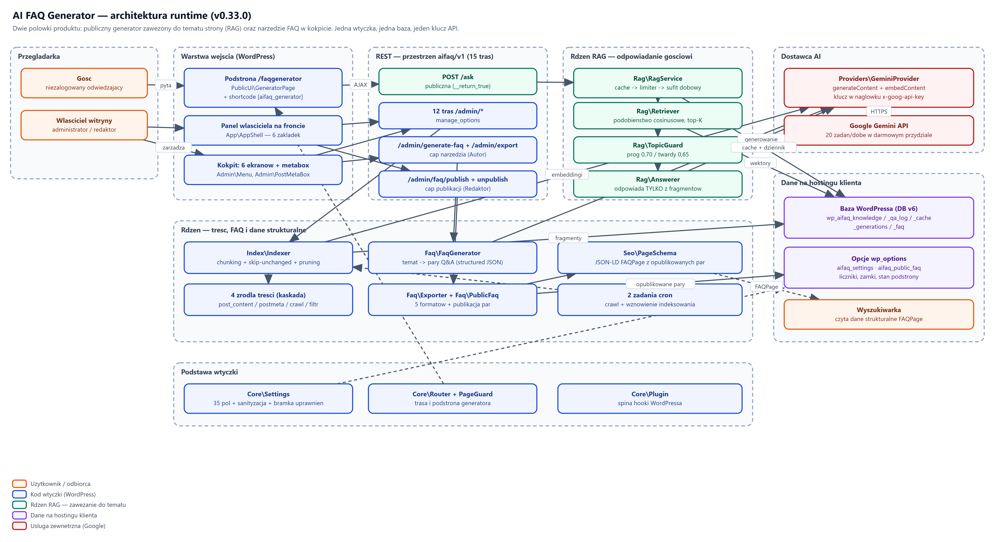
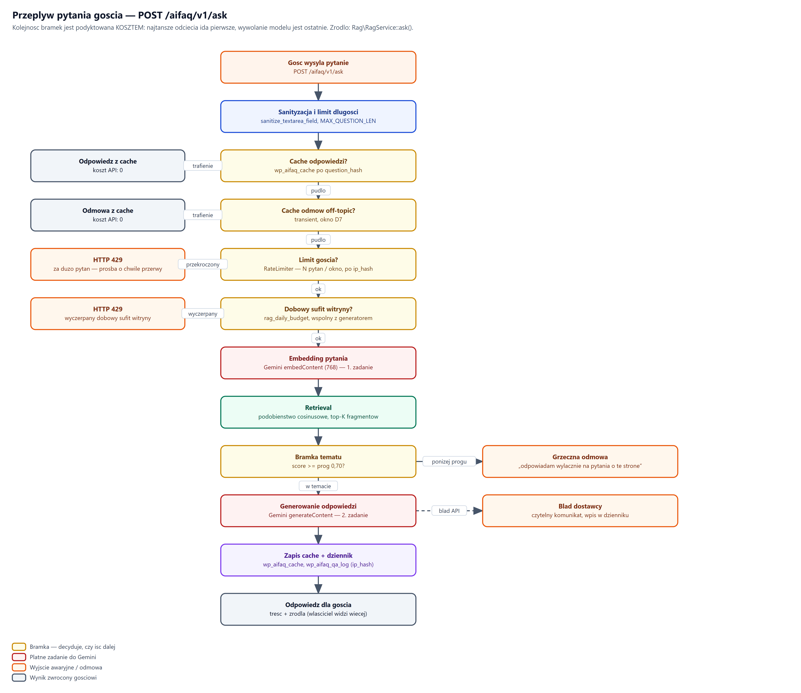
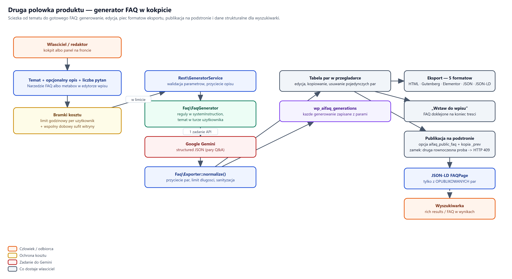

AI FAQ Generator — co system robi
Zakres dokumentu. Opis funkcjonalny: jakie zadania wtyczka wykonuje, w jakiej kolejności i pod jakimi warunkami. Bez opisu wyglądu okien — ten jest w instrukcji wprowadzającej dla klienta.
Dokumenty towarzyszące
• Wymagania niefunkcjonalne — wydajność, bezpieczeństwo, limity, koszty.
• Schema — format danych wejściowych i wyjściowych, tabele, REST.
• Instrukcje systemowe — cykl życia wtyczki w środowisku klienta.
Diagramy pochodzą z plików źródłowych .drawio dołączonych
do paczki (katalog schematy/) — można je otworzyć i edytować
na app.diagrams.net lub we wtyczce Draw.io do VS Code.
AI FAQ Generator {{WERSJA}} · Wymaga WordPress 6.4+ i PHP 8.0+ · Licencja {{LICENCJA}}
Wtyczka WordPressa dokładająca witrynie dwie odrębne zdolności, oparte na jednej bazie wiedzy i jednym kluczu dostawcy AI.
Na witrynie powstaje podstrona (domyślnie /faqgenerator), na której
niezalogowany gość zadaje pytanie i otrzymuje odpowiedź zbudowaną
wyłącznie z treści tej witryny. Pytanie spoza tematu kończy się jawną odmową,
nie zaś odpowiedzią z wiedzy ogólnej modelu.
Redakcja podaje temat, a system zwraca zestaw par pytanie/odpowiedź w ustalonej strukturze. Zestaw można wyeksportować albo opublikować na podstronie publicznej wraz z danymi strukturalnymi dla wyszukiwarek.
| Obszar | Po stronie wtyczki | Po stronie klienta |
|---|---|---|
| Treść odpowiedzi | Zawężenie do treści witryny, odmowa poza tematem | Jakość i aktualność treści na stronie |
| Klucz dostawcy AI | Przechowywanie, maskowanie w interfejsie, wysyłka w nagłówku | Wygenerowanie klucza i pilnowanie jego poufności |
| Koszt zapytań | Limity, pamięć podręczna, sufit dobowy | Wybór modelu i ewentualne przejście na plan płatny |
| Dane | Tabele własne z prefiksem wp_aifaq_, sprzątanie przy deinstalacji |
Kopie zapasowe bazy |
Zasada nadrzędna. System nigdy nie odpowiada z wiedzy ogólnej modelu. Brak pokrycia w bazie wiedzy skutkuje odmową — jest to zachowanie zamierzone i objęte testami.
Pięć warstw: wejście WordPressa, przestrzeń REST, rdzeń RAG, rdzeń treści oraz dane na hostingu klienta. Dostawca AI jest jedyną zależnością zewnętrzną.
Diagram architektury znajduje się na następnej stronie w układzie poziomym.
| Warstwa | Odpowiedzialność | Główne klasy |
|---|---|---|
| Wejście | Podstrona publiczna, panel właściciela, ekrany kokpitu, metabox | PublicUi\GeneratorPage, App\AppShell, Admin\Menu |
| REST | 15 tras w przestrzeni aifaq/v1, walidacja i bramki uprawnień |
Rest\RouteRegistrar, Rest\RestController i pięć usług |
| Rdzeń RAG | Wyszukanie fragmentów, próg tematyczny, redakcja odpowiedzi | Rag\RagService, Rag\Retriever, Rag\TopicGuard, Rag\Answerer |
| Rdzeń treści | Indeksowanie, generowanie FAQ, eksport, dane strukturalne | Index\Indexer, Faq\FaqGenerator, Faq\Exporter, Seo\PageSchema |
| Dane | Pięć tabel własnych oraz opcje WordPressa | Data\KnowledgeRepository i repozytoria towarzyszące |
Jedynym punktem wyjścia na zewnątrz jest dostawca AI (Google Gemini), wołany przez
Providers\GeminiProvider po HTTPS, z kluczem w nagłówku żądania.
Wykorzystywane są dwie odrębne zdolności: embeddingi (zamiana tekstu
na wektor) oraz generowanie treści. Reszta systemu nie wywołuje
dostawcy bezpośrednio — interfejs dostawcy jest wymienny.

schematy/01-architektura-runtime.drawioWarunek konieczny działania obu połówek. Bez zbudowanej bazy wiedzy system odmawia odpowiedzi na każde pytanie.
Pobranie treści witryny
System pozyskuje treść czterema źródłami ułożonymi w kaskadę, stosowanymi w kolejności aż do uzyskania niepustego wyniku:
post_content — surowa treść wpisu lub strony,postmeta) — treść budowniczych stron,Podział na fragmenty i pomijanie niezmienionych
Treść dzielona jest na fragmenty zapisywane w wp_aifaq_knowledge.
Dla każdego fragmentu liczona jest suma kontrolna content_hash.
Przy ponownym indeksowaniu fragmenty o niezmienionej sumie kontrolnej nie są wysyłane do dostawcy — oszczędza to dobowy przydział. Fragmenty osierocone (po usunięciu wpisu) są kasowane.
Wyliczenie embeddingów
Każdy nowy lub zmieniony fragment trafia do dostawcy w celu wyliczenia wektora,
zapisywanego w kolumnie embedding. Zapytania wysyłane są paczkami.
Parametry indeksu zapisuje sygnatura aifaq_index_signature
(dostawca, model, wymiar wektora, wersja źródeł). Zmiana któregokolwiek z nich
wymusza przebudowę — wektory z różnych modeli nie są porównywalne.
Przerwanie i wznowienie
Indeksowanie przerywa się samo po przekroczeniu budżetu czasu, zapisując stan. Ponowne uruchomienie kontynuuje od miejsca zatrzymania.
Jeżeli powodem przerwania był wyłącznie budżet czasu, system
planuje zdarzenie aifaq_reindex_continue, które wznawia pracę
automatycznie. Przerwanie z powodu błędu lub limitu dostawcy nie jest wznawiane
samoczynnie.
Ścieżka publiczna, dostępna bez logowania. Trasa
POST /aifaq/v1/ask.
Diagram przepływu znajduje się na następnej stronie w układzie poziomym.
Bramki przed wywołaniem dostawcy
Żądanie przechodzi kolejno przez: walidację treści pytania → pamięć podręczną → limit częstotliwości dla gościa → dobowy sufit zapytań. Odpowiedź z pamięci podręcznej oraz odrzucenie przez limit nie zużywają przydziału dostawcy.
Dobór fragmentów
Pytanie zamieniane jest na wektor, po czym Rag\Retriever wybiera
rag_top_k fragmentów o najwyższym podobieństwie kosinusowym
(domyślnie 5).
Bramka tematyczna i odmowa
Rag\TopicGuard porównuje najlepsze dopasowanie z dwoma progami:
miękkim rag_threshold (domyślnie 0,70) i twardym
rag_threshold_hard (domyślnie 0,65).
Redakcja odpowiedzi
Rag\Answerer przekazuje dostawcy wyłącznie wybrane fragmenty
i poleca zbudowanie odpowiedzi tylko z nich. Treść pobrana z witryny traktowana
jest jako dane, nie jako polecenie — zabezpiecza to przed wstrzyknięciem
instrukcji w treść strony.
Każde pytanie odnotowywane jest w wp_aifaq_qa_log wraz ze statusem,
źródłem odpowiedzi i wynikiem dopasowania.

schematy/02-przeplyw-pytania-goscia.drawioŚcieżka administracyjna. Trasa
POST /aifaq/v1/admin/generate-faq.
Diagram przebiegu znajduje się na następnej stronie w układzie poziomym.
Dane wejściowe
Wymagany temat oraz opcjonalny opis uzupełniający. Liczba par ograniczona jest ustawieniem: zakres 5–20, wartość domyślna 20. Język zestawu bierze się z ustawień wtyczki.
Osadzenie w treści witryny
Temat służy do wybrania fragmentów z bazy wiedzy — tak samo jak przy pytaniu gościa. Zestaw powstaje więc z treści witryny, a nie z wiedzy ogólnej modelu.
Struktura wyniku i zapis
Dostawca zwraca dane w ustalonej strukturze (pary pytanie/odpowiedź).
Wynik jest sprawdzany pod kątem zgodności ze strukturą, normalizowany
i zapisywany w wp_aifaq_generations wraz z tematem, opisem,
językiem i autorem.
Zakres dla pojedynczej strony
Ten sam mechanizm dostępny jest w edytorze wpisu lub strony (metabox). Wynik wiązany jest wtedy z konkretnym wpisem, co pozwala prowadzić osobne zestawy FAQ dla wybranych podstron.

schematy/05-generator-faq.drawioPublikacja zestawu
Trasy POST /admin/faq/publish oraz POST /admin/faq/unpublish
przenoszą wybrany zestaw do tabeli wp_aifaq_faq i udostępniają go
na podstronie publicznej, pod polem zadawania pytań.
Publikacja jest operacją zastępującą — poprzedni zestaw przechodzi do zapasu
(aifaq_public_faq zachowuje poprzedni stan), więc możliwy jest powrót.
Zamek publikacji
Równoległe publikacje są szeregowane. Gdy dwie osoby publikują naraz, przechodzi jedna, a pozostałe otrzymują odpowiedź o konflikcie (HTTP 409). Zapobiega to cichej utracie zmian.
Dane strukturalne dla wyszukiwarek
Seo\PageSchema dokłada do podstrony publicznej dane strukturalne
JSON-LD typu FAQPage (Schema.org), zbudowane z aktualnie
opublikowanych par. Puste FAQ nie generuje danych strukturalnych.
Pięć formatów wyjściowych
Trasa POST /admin/export zwraca wybrany zestaw w jednym z pięciu
formatów, przeznaczonych do wykorzystania poza witryną (wklejenie do strony,
przekazanie dalej, dane strukturalne).
Dziennik pytań
wp_aifaq_qa_log gromadzi pytania gości: treść, odpowiedź, status,
źródło (dostawca lub pamięć podręczna), wynik dopasowania oraz autora, jeśli
pytanie zadał użytkownik zalogowany. Dostęp przez GET /admin/history,
czyszczenie przez POST /admin/history/clear.
Historia generowań
wp_aifaq_generations przechowuje każdy wygenerowany zestaw.
Obsługa: GET /admin/generations, GET /admin/generations/detail,
POST /admin/generations/delete.
Usunięcie pozycji czyści również powiązane wpisy w bazie wiedzy — nie zostają dane osierocone.
| Zdarzenie | Wyzwalacz | Działanie |
|---|---|---|
aifaq_reindex_continue |
Przerwanie indeksowania wyłącznie z powodu budżetu czasu | Wznawia indeksowanie od zapisanego miejsca |
| zadanie obsługi kolejki treści | Pobieranie wyrenderowanych stron | Przetwarza kolejkę porcjami, by nie blokować żądania |
Oba zdarzenia są zdejmowane przy deinstalacji. Jest to sprawdzane testem — w bazie klienta nie zostaje osierocone zadanie cykliczne.
Trzy poziomy dostępu. Bramka sprawdzana jest po stronie serwera dla każdej trasy — ukrycie przycisku w interfejsie nie jest zabezpieczeniem.
| Poziom | Wymaganie | Zakres tras |
|---|---|---|
| Publiczny | brak logowania | POST /ask — jedyna trasa otwarta |
| Narzędzie | uprawnienie do publikowania treści (Autor i wyżej) | /admin/generate-faq, /admin/export |
| Publikacja | uprawnienie redaktorskie | /admin/faq/publish, /admin/faq/unpublish |
| Administracja | manage_options |
pozostałe 12 tras /admin/* |
Zawężenie względem wersji wcześniejszych. Publikacja treści widocznej publicznie wymaga uprawnień redaktorskich, a nie samego dostępu do narzędzia. Autor może wygenerować i wyeksportować zestaw, ale nie opublikuje go samodzielnie.
wp_rest,| Składnik | Wymaganie | Uwagi |
|---|---|---|
| WordPress | 6.4 lub nowszy | wymagane trasy REST i mechanizm zdarzeń |
| PHP | 8.0 lub nowszy | rozszerzenia standardowe; wymagany mbstring |
| Baza | MySQL 5.7+ / MariaDB 10.3+ | pięć tabel z prefiksem witryny |
| Ruch wychodzący | HTTPS do API dostawcy | zapora musi przepuszczać połączenia wychodzące |
| Zadania cykliczne | działający WP-Cron | bez nich wznowienie indeksowania wymaga ręcznego kliknięcia |
| Wgrywanie plików | limit ≥ 2 MB | paczka wtyczki mieści się poniżej 1 MB |
| Sprawdzenie | Oczekiwany wynik |
|---|---|
| Pytanie z pokryciem w treści witryny | odpowiedź zbudowana z treści strony |
| Pytanie spoza tematu | jawna odmowa, brak zmyślonej odpowiedzi |
| Podstrona publiczna jako gość | pole pytania widoczne, panel właściciela niewidoczny |
| Publikacja zestawu | pary widoczne publicznie, w źródle strony obecny JSON-LD FAQPage |
| Ponowne indeksowanie bez zmian w treści | brak nowych zapytań do dostawcy |
Gdy podstrona zwraca 404 — po zmianie adresu podstrony należy przebudować reguły bezpośrednich odnośników (Ustawienia → Bezpośrednie odnośniki → Zapisz).